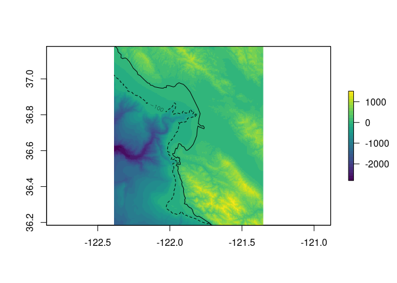

The goal of affinity is to provide the basic tools used for raster grid georeferencing. This includes:
- the affine transform
- the world file model
- the GDAL RasterIO window model
- basic tools for performing grid calculations
- simple control point georeferencing for un-mapped rasters.
The main use at the moment is the ability to get a geotransform from an extent and dimension, this makes it easy to drive GDAL functions and to compare with the RasterIO logic in the sf package raster reader.
The main functions for georeferencing are affinething() to collect drawn points interactively from an un-mapped raster image and domath() to calculate the extent of the raster in geographic terms and assignproj() to apply a map projection inline. There are some other experimental functions to write GDAL VRT gdalvrt() and to store some known cases for unmapped image sources.
The basic tools still rely on the raster package.
Installation
You can install the dev version of affinity from GitHub with:
devtools::install_github("hypertidy/affinity")Example
This examples takes an an un-mapped raster and georefences it by defining some control points for a simple (offset and scale) affine transformation.
Generally, we want diagonal points, so I tend to think “southwest” and “northeast”, it doesn’t really matter where they are as long as there’s some pixels between them in both directions. Monterey Bay is very recognizable so I read off some long-lat control points using mapview.
library(affinity)
#data("montereybay", package = "rayshader")
data("monterey", package = "affinity")
library(raster)
#> Loading required package: sp
## we know that rayshader works transpose
r <- t(raster(monterey))
prj <- "+proj=longlat +datum=WGS84"
## the north tip of Pacific Grove
sw <- c(-121.93348, 36.63674)
## the inlet at Moss Landing
ne <- c(-121.78825, 36.80592)
#mapview::mapview(c(sw[1], ne[1]), c(sw[2], ne[2]), crs = prj)We can obtain raw (graphics) coordinates of those locations from our image, by plotting it and clicking twice with affinething().
Note the order, the first point is “sw” and the second is “ne” - the order is not important but it must match.
## mask the raster so we can see easily where we need to click
xy <- affinething(r > 0)In this example the points are
# xy <- structure(c(0.65805655219227, 0.858931100128933, 0.367586425626388,
# 0.589597209007295), .Dim = c(2L, 2L), .Dimnames = list(NULL,
# c("x", "y")))
xy <- structure(c(0.440321955368224, 0.580740883913579, 0.453408220576972,
0.625733980086801), .Dim = c(2L, 2L), .Dimnames = list(NULL,
c("x", "y")))Please note that if the matrix changes, then the values above will have to change as well (this has happened).

Now we have everything we need to re-map our raster! We don’t need to project our points as the known locations are in the same coordinate system as the source data. (In other situations we might georeference using a graticule on a projected map.)
mapped <- assignproj(setExtent(r, domath(rbind(sw, ne), xy, r, proj = NULL)), prj)
m <- rnaturalearth::ne_countries(country = "United States of America", scale = 10)
plot(mapped, col = viridis::viridis(30))
plot(m, add = TRUE)
contour(mapped, levels = -100, lty = 2, add = TRUE)
#mv <- mapview::mapview(mapped)Please note that the ‘affinity’ project is released with a Contributor Code of Conduct. By contributing to this project, you agree to abide by its terms.